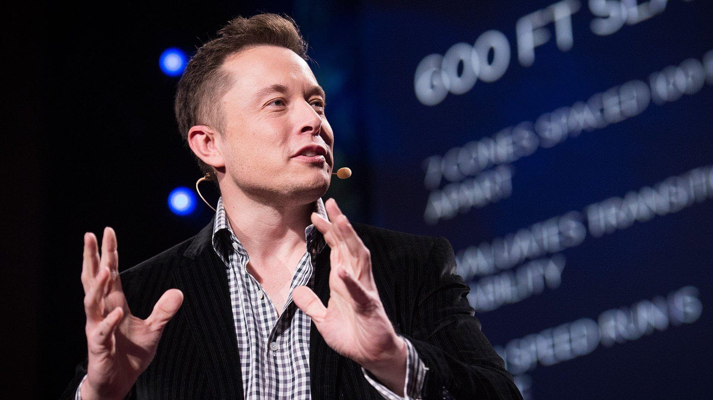

Elon Reeve Musk
Elon Reeve Musk ( born June 28, 1971) is a business magnate and investor. Musk is the founder, chairman, CEO and chief technology officer of SpaceX; angel investor, CEO, product architect and former chairman of Tesla, Inc.; owner, chairman and CTO of X Corp.; founder of the Boring Company; co-founder of Neuralink and OpenAI; and president of the Musk Foundation. He is the wealthiest person in the world, with an estimated net worth of US$226 billion as of September 2023, according to the Bloomberg Billionaires Index, and $249 billion according to Forbes, primarily from his ownership stakes in both Tesla and SpaceX.
Early life and education
Elon Reeve Musk was born on June 28, 1971, in Pretoria, one of South Africa's capital cities.
Musk has British and Pennsylvania Dutch ancestry. His mother, Maye Musk is a model and dietitian born in Saskatchewan, Canada, and raised in South Africa. His father, Errol Musk, is a South African electromechanical engineer, pilot, sailor, consultant, and property developer, who partly owned a Zambian emerald mine near Lake Tanganyika.
Musk attended Waterkloof House Preparatory School, Bryanston High School, and Pretoria Boys High School, from where he graduated.
He transferred to the University of Pennsylvania (UPenn), where he completed studies for a Bachelor of Arts degree in physics and a Bachelor of Science degree in economics from the Wharton School.
In 1995, he was accepted to a PhD program in materials science at Stanford University.
Qualities of Elon Musk
Elon Musk's success is attributed to his open mindset and big dreams. He founded The Boring Company in 2016, Tesla Inc., SolarCity, and co-founded OpenAI in 2015. Musk's vision for electric vehicles and AI research has revolutionized the industry and paved the way for his future endeavors.
Elon Musk is a quick thinker, multitasker, and efficient individual, known for his rational thinking and efficient business approach. He recently cancelled Twitter's acquisition due to feasibility issues, but has refuted allegations.
Few achieve success without a strong work ethic, as seen in Elon Musk's aggressive work ethic and belief in justifying business goals, despite his 16-hour workdays and aggressive attitude.
Elon, driven by passion and inner fire, embarked on a mission to provide humans with a plan B for Mars, despite some skepticism.
Elon Musk, despite facing criticism and challenges in finding vendors and suppliers, remained optimistic and focused on implementing his electric vehicle dream through Tesla, despite lacking prior experience in the automotive industry.
Public Perception
Though Musk's ventures were influential within their own industries in the 2000s, he only became a public figure in the early 2010s. He has often been described as an eccentric who makes spontaneous and controversial statements, contrary to other billionaires who prefer reclusiveness to protect their businesses.
With Steve Jobs and Donald Trump, Musk served as inspiration for the characterization of Tony Stark in the Marvel film Iron Man (2008).
Musk had a cameo appearance in the film's 2010 sequel, Iron Man 2.
Musk was elected a Fellow of the Royal Society (FRS) in 2018.
Time has listed Musk as one of the most influential people in the world on four occasions in 2010, 2013, 2018 and 2021
Some of the Companies Owned by Elon Musk
| Company Name |
Industry |
Niche |
Description |
| SpaceX |
Space |
Space Transportation and Communications |
SpaceX, founded by Elon Musk in 2002, provides space transportation services and communications, aiming to reduce costs for Mars colonization. Musk collaborated with the Mars Society to purchase refurbished missiles. |
| Tesla |
Automobile |
Cars and Trucks |
Tesla, founded in 2003, is the world's most valuable automotive company, producing electric vehicles, battery energy storage, solar panels, and solar roof tiles. |
| SolarCity and Tesla Energy |
Energy |
Solar Energy Generation Systems |
Tesla Energy, a clean energy subsidiary of Tesla, develops photovoltaic solar energy systems and battery storage products for residential, commercial, and industrial clients. |
| Neuralink |
Tech and AI |
Implantable Brain-Machine Interfaces |
Neuralink Corporation is a neurotechnology company in the process of developing implantable brain-machine interfaces (BMIs). Elon Musk is the Co-founder of this SanFrancisco based company established in 2016. |
| The Boring Company |
Construction |
Infrastructure and Tunnel Construction Services |
Elon Musk founded The Boring Company, focusing on infrastructure and tunnel construction for intra-city transit systems in major American cities, including Las Vegas tunnels for loop travel. |
| X(Twitter) |
Social Media |
Microblogging Platform |
X (Twitter), founded in 2006, is a microblogging platform with 280 characters, headquartered in San Francisco, California, and now owned by Elon Musk with 400 million active users. |